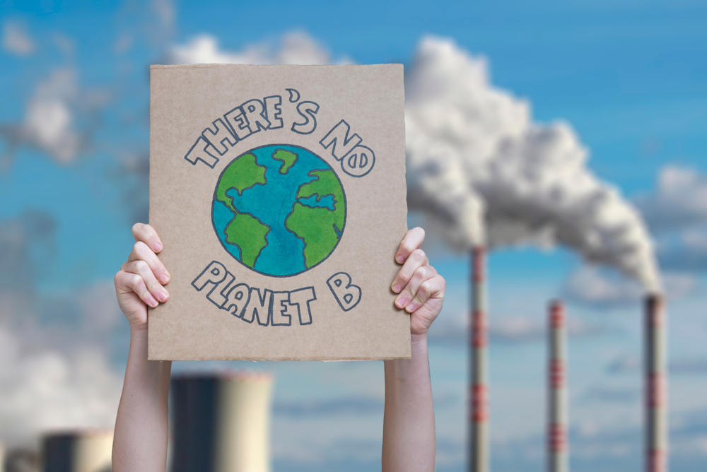

The world is on the brink of a climate catastrophe and current actions and plans to address the crisis are insufficient. Without transformative action starting now and within this decade to reduce greenhouse gas emissions deeply and rapidly in all sectors, the 1.5°C target will be at risk and with it the lives of more than 3 billion people. Failure to act leads to intensifying heatwaves, droughts, flooding, wildfires, sea-level rise, and famines. Emissions should already be decreasing now and will need to be cut almost by half by 2030 - a mere seven years from now. To combat climate change and its impacts by 2030, urgent and transformative action is needed to meet the commitments under the Paris Agreement across mitigation and adaptation efforts.
Target 13.1: The number of deaths and missing persons due to disasters per 100,000 population has steadily decreased from 1.64 during 2005-2015 to 0.86 during 2012-2021. The average disaster mortality stood at 47,337 in absolute terms in 2015-2021. However, the number of persons affected by disasters per 100,000 people rose from 1,198 during 2005-2015 to 2,113 during 2012-2021. The number of countries with national strategies for disaster risk reduction has increased from 55 in 2015 to 126 by the end of 2021. Based on this, a total of 118 countries have reported having some level of policy coherence with other global frameworks, such as the 2030 Agenda and the Paris Agreement.
Target 13.2: Global temperatures have already hit 1.1°C, rising due to increasing global greenhouse gas emissions, which reached record highs in 2021. Real-time data from 2022 show emissions continuing an upward trajectory. Instead of decreasing emissions as required by the target to limit warming, carbon dioxide levels increased from 2020 to 2021 at a rate higher than the average annual growth rate of the last decade and is already 149% higher than pre-industrial levels. Projected cumulative future CO2 emissions over the lifetime of existing and currently planned fossil fuel infrastructure exceed the total cumulative net CO2 emissions in pathways that limit warming to 1.5°C (>50%) with no or limited overshoot.
Target 13.3: An analysis of 100 national curriculum frameworks reveals that nearly half (47%) do not mention climate change. In 2021, despite 95% of teachers recognizing the importance of teaching about climate change severity, only one-third are capable of effectively explaining its effects in their region. Additionally, 70% of young people can only describe the broad principles of climate change in 2022.
Target 13.a: According to the OECD, total climate finance provided and mobilised by developed countries for developing countries amounted to $83.3 billion in 2020, a 4% increase from 2019, but still short of the $100 billion target. Climate finance remains primarily targeted to mitigation; however, and adaptation finance continues to lag, with international finance flows to developing countries 5-10 times below estimated needs.

Replacing one regular light bulb with a compact fluorescent light bulb will save 150 pounds of carbon dioxide a year.
Walk, bike, carpool or take mass transit more often. You'll save one pound of carbon dioxide for every mile you don't drive!
You can save 2,400 pounds of carbon dioxide per year by recycling just half of your household waste.
It takes a lot of energy to heat water. Use less hot water by taking shorter and cooler showers and washing your clothes in cold or warm instead of hot water (more than 500 pounds of carbon dioxide saved per year).
A single tree will absorb one ton of carbon dioxide over its lifetime.